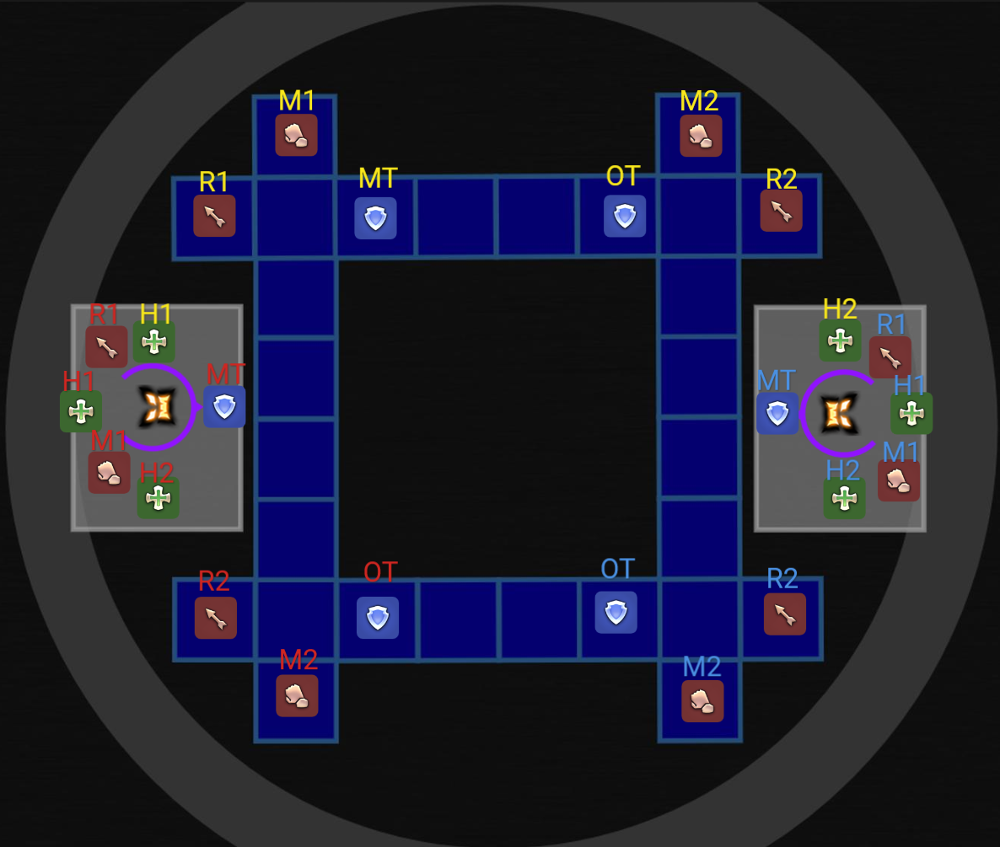
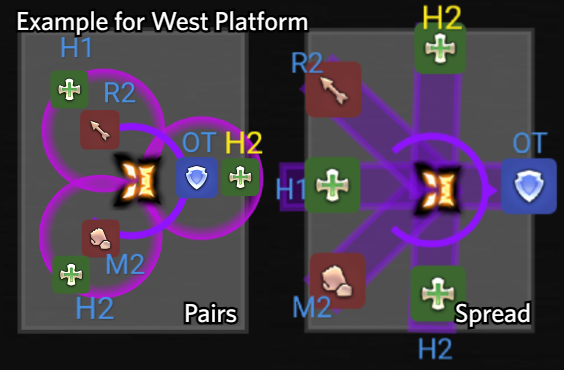
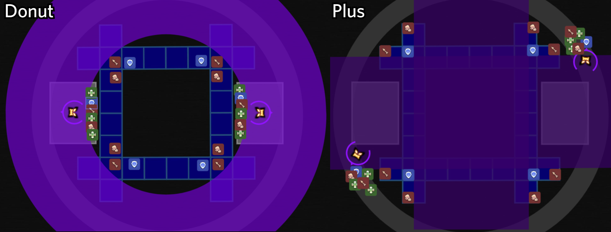
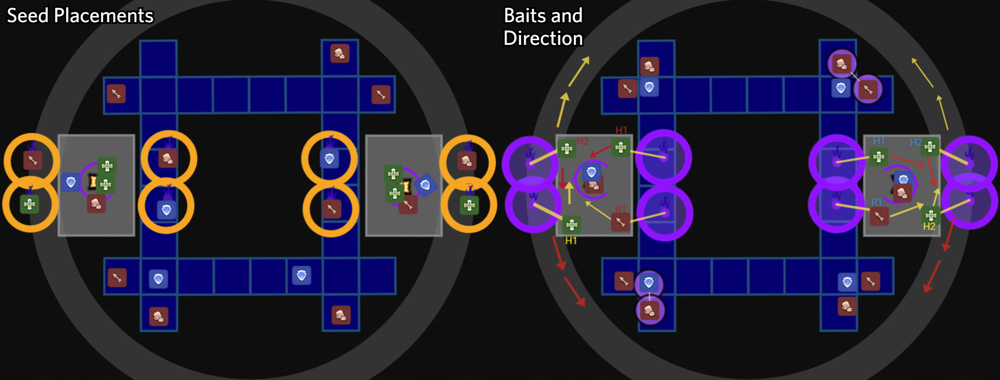
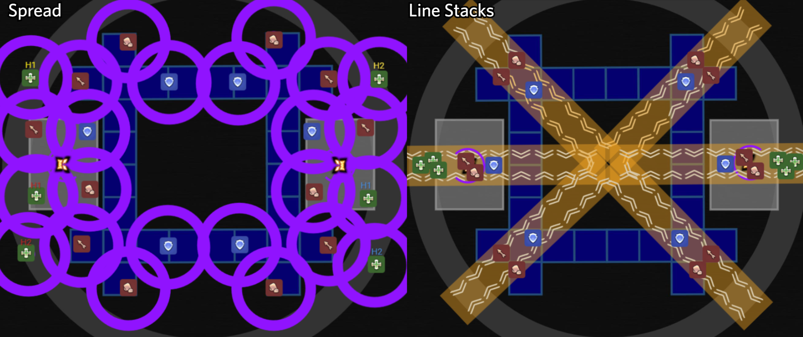
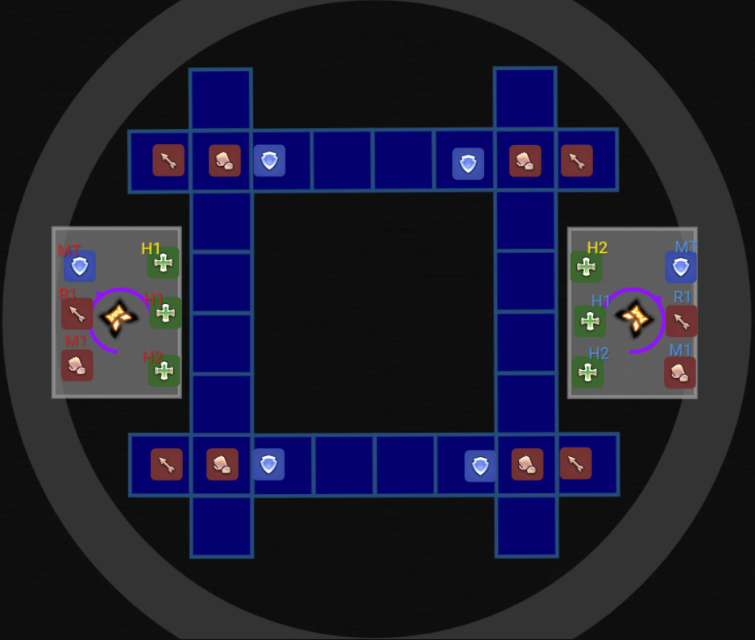

Phase 2 (Tiles)
Overview
Phase 2 (Tiles) features two parallel timeline sequences depending on your team's positioning in the arena between the main Cloud of Darkness boss and the Adds. Both groups handle mechanics simultaneously until the phase concludes.
You can verify your positions using the WTFDIG position checker here.
You can view the full HealerOut raid plan here.
- Adds & Damage Transfer: 2 Stygian Shadows spawn on the East and West platforms. All damage dealt to adds transfers directly to the boss at the end of Phase 2 via Evaporation.
- Atomos Priority: 4 Atomos spawn on the outer ring with low HP (~150k). Defeat them within 10–15 seconds or they tether to players, dealing ticking damage and healing the boss for 300,000 HP every 2 seconds!
- Interrupt Flood of Darkness: Platform players MUST use Interject (or Head Graze) to interrupt the add's Flood of Darkness cast to prevent a wipe!
Phase Timeline
Tiles
In Phase 2, the arena transforms into central tiles (16 tiles), two side platforms (East/West), and an outer ring. Players on the inside tiles must strictly manage tile mechanics.
- Single Occupancy: Only 1 player can occupy a tile at a time. If two players stand on the same tile, it immediately disappears for 5 seconds, causing affected players to fall to their death and respawn on a side platform.
- 37-Second Tile Lifetime: A tile begins glowing dark purple after 30 seconds and disappears 7 seconds later. Players must refresh their tile lifetime by moving to an empty tile between mechanics whenever possible.
- Movement Priority: When resolving mechanics or refreshing tiles, always move in strict order: Tanks → Melee DPS → Ranged DPS.
- Tank Aggro: The boss auto-attacks the top 4 players on the aggro list. All tanks on the inside platform must use Provoke to prevent auto-attacks from hitting side platform tanks or DPS.
Players can see where they have to position themselves in the picture below:

The Third Art of Darkness (Adds Memory)
The Stygian Shadows perform 3 telegraph motions in sequence that players must resolve in order.
- Cleaves: Large cleave directed towards the side displaying a glowing orb.
- Spread: Long line AoEs shot at the 6 closest players.
- Pairs: 2-player stack AoE shot at the 3 closest players.
- The sequence pattern will be either Cleave → Spread/Pairs → Cleave or Cleave → Cleave → Spread/Pairs.

Particle Concentration (Towers)
12 towers spawn across the arena that must be soaked with the correct number of players.
- Side Platforms: 2 towers per side platform (requiring 3 players each).
- Inside Tile Corners: Handle corner towers using Tanks > Melee DPS > Ranged DPS priority.
- Unsoaked towers deal massive raidwide damage to the entire raid.
Ghastly Gloom (Plus / Donut)
- Plus (Lightning tell): Inside players stand on the 3 furthest squares from the boss. Outside players stand near Atomos puddles (do not touch!).
- Donut (Swirling cloud tell): Stand as close to the boss as possible.

Curse of Darkness
The platform adds cast small raidwides that apply a Curse of Darkness debuff to outer platform players with staggered timers.
- When this debuff expires, your character will shoot a wide conal cleave AoE in the direction your character is facing.
- Point your character outwards away from all other players before the debuff timer runs out to avoid cleaving the group.
Evil Seeds & Thorny Vine (Tethers)
- Evil Seeds (Brambles): 8 players get seed markers (4 inside, 2 on each side platform). Place seeds on designated spots and walk back carefully without stepping on occupied tiles.
- Thorny Vine (Tethers): Purple circles tether players to seeds or other players. Baiters on the outside platforms run along the outer ring to stretch and break tethers.
Players can see where to position the seeds in the image below:

Spread AoEs & Line Stacks
- Golden Glow (Line Stacks): 6 corner/side lasers shot at designated stack groups.
- Purple Orbs (Spread AoEs): 12 spread AoEs shot at individual players.

Active-Pivot Particle Beam
The boss channels a 5-hit rotating laser beam starting from East or West and pivoting 90° (Clockwise or Counter-Clockwise) to finish North or South.
- Rotation Dodging:
- Clockwise Rotation: NW and SE corners are unsafe and must rotate with the beam.
- Counter-Clockwise Rotation: NE and SW corners are unsafe and must rotate with the beam.
- Platform Groups (Outside): Step onto the safe side of the Outer Ring. Once the laser sequence begins, move back onto your side platforms.
- Middle Tiles (Inside):
- Pre-Refresh: Refresh tile lifetimes immediately before the mechanic starts so your tile stays solid throughout the 5 hits.
- Tile Priority: Move in strict priority order: Tanks → Melee DPS → Ranged DPS.
- Safe Corners: DPS on safe corners remain in place. Tanks create space for incoming players from unsafe corners.
- Once in a safe corner, you only need to move 1 tile after rotation begins. Return to your original starting corners when the laser sequence ends.
Looming Chaos (Forced Swap)
Tethers swap player positions between side platforms and inside tiles.
- Side platform players swap with the opposite side platform or inner corners based on proximity.
- Re-establish tank aggro immediately upon landing in your new position.
Players can see the positions they have to preposition themselves in below:

Feint Particle Beam
After the cast is completed, a tracking AoE will appear under a random player in each corner on the inside platform.
- Run 180° clockwise around the inner platform to outrun the tracking AoE.
- Tank Adjustment: If a DPS is targeted, the Tank should wait until they have moved before sliding into their spot to clear the path for the other corners.
- After moving 180° around the middle platform, carefully walk forward another 180° clockwise to return to your original corner.
Evaporation
- Adds transfer all damage taken to the boss (5% add HP = 1% boss HP).
- Boss resets the arena back to Phase 0 and proceeds into the opposite Phase 1 sequence for the victory lap.